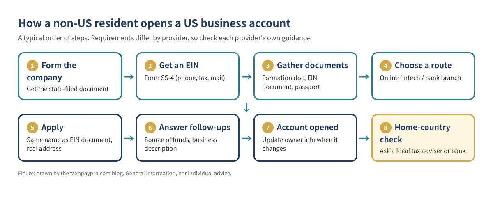
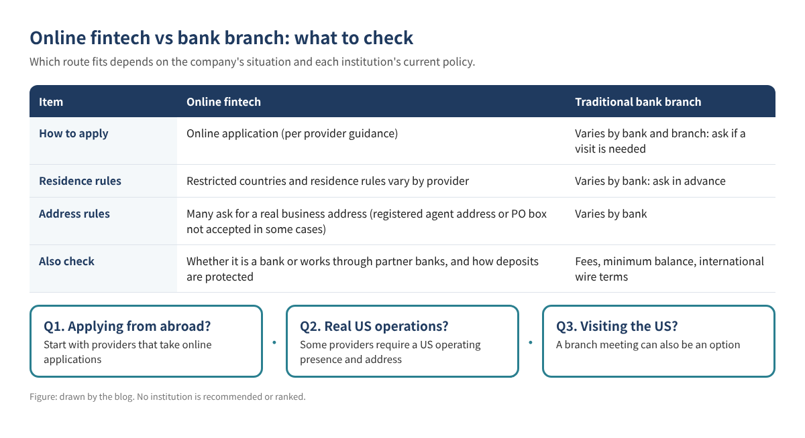
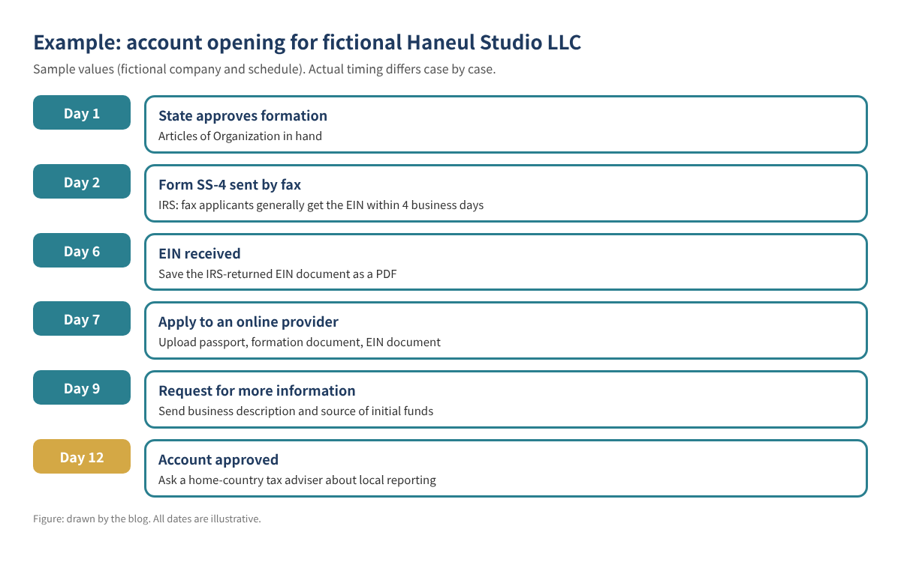

Opening a US Business Bank Account as a Non-US Resident: Online Fintech vs Branch Visit, Documents, and Why Applications Get Rejected
After forming a US LLC or corporation, the first practical hurdle is usually the bank account. Even with formation documents and an EIN, an application can be put on hold or declined. Many of the reasons can be checked in advance: names that do not match across documents, an address that does not meet the provider's rules, or an owner living in a country the provider does not serve. This guide walks non-US founders through the order of steps, the documents, and the requirements that providers publish themselves.
This article is general educational information, not tax, legal or financial advice. Rules and provider policies change often, so check official sources.
Who this is for
☐ Founders living outside the US who formed, or plan to form, a US LLC or C-Corp
☐ Owners without an SSN or ITIN who want a US account in the company's name
☐ Anyone comparing online fintech providers with a bank branch visit
☐ Friends or family in the US helping an overseas founder prepare
Why banks look closely at owners
US financial institutions must identify the real owners of a company when it opens an account. FinCEN's customer due diligence (CDD) rule guidance says institutions identify each individual who owns 25% or more of the entity, directly or indirectly, plus one individual with significant control. Foreign owners can provide a passport number or similar identifier, and nominee owners are not acceptable.
This rule is changing. On February 13, 2026, FinCEN issued an exceptive relief order so institutions need not re-identify owners every time an existing customer opens a new account, and on November 17, 2026 it announced a proposed rule to revise the CDD requirements (open for comment). Each institution sets its own process, so follow the instructions you receive when you apply.
The BOI exemption is not a bank exemption. FinCEN's BOI page says companies formed in the US are now exempt from BOI reporting, and the reporting companies are entities formed under foreign law that registered to do business in a US state. That concerns reports filed with FinCEN. Banks and fintech providers still ask for owner information when an account is opened.

Step 1: Line up your documents before applying
Published provider guidance shows a similar core set of documents. The table below lists the common items; any provider may ask for more.
| Document | Why it is needed | Provider guidance examples |
|---|---|---|
| State-filed formation document (Articles of Organization, Certificate of Formation, etc.) | Shows the company is registered | Mercury, Relay, Airwallex (depending on state) |
| IRS-issued EIN document (CP 575, 147C, etc.) | Confirms the company name matches the EIN | Mercury, Relay, Wise |
| ID for owners and a control person (passport for non-US persons) | Identifies 25%+ owners and one manager | Mercury, Relay, Wise, Airwallex |
| Real business address | Many providers do not accept registered agent addresses or PO boxes | Mercury, Relay, Wise |
| Business description and source of initial funds | Explains the money flow and industry | Relay (description from all applicants; source of initial funds from non-US owners) |
The EIN comes from Form SS-4
Applicants with no US residence or principal place of business cannot use the online EIN application. The IRS Instructions for Form SS-4 (revised 12/2025) give three methods. On line 7b, the instructions say to enter "foreign" or N/A if the responsible party does not have and is not eligible for an SSN or ITIN.
| Method | What the IRS says | When you get the EIN |
|---|---|---|
| Phone (international applicants only) | 267-941-1099, not toll-free, Monday to Friday, 6 a.m. to 11 p.m. Eastern | During the call |
| Fax | 304-707-9471 from outside the US, 855-215-1627 within the US (24 hours) | Generally within 4 business days |
| Internal Revenue Service, Attn: EIN International Operation, Cincinnati, OH 45999 | About 4 weeks (apply 4 to 5 weeks before you need it) |
The next article in this series covers the EIN process and the CP 575 and 147C documents in detail. For the bank application, remember that providers want a document issued or returned by the IRS, not a copy of what you sent. Mercury, for example, says that if you submit an SS-4, it must be the version returned by the IRS.
Step 2: Compare online fintech with a branch visit
Founders living abroad usually start by checking online fintech providers that accept applications remotely. Some of them, however, require a US operating presence and US addresses, so online does not mean open to everyone. If you plan to visit the US, contacting a traditional bank branch is another route. Policies differ by bank and even by branch, so ask before you go whether they open accounts for companies owned by non-US residents and which documents they need.
| What to check | Online fintech | Traditional bank branch |
|---|---|---|
| How to apply | Online application (per provider guidance) | Varies by bank and branch |
| Country restrictions | Each provider keeps its own list | Ask the bank in advance |
| Address rules | Many require a real business address | Ask the bank in advance |
| Also review | Whether it is a bank or works through partner banks, and how deposits are protected | Fees, minimum balance, international wire terms |

Step 3: Read each provider's published requirements
The summary below comes from each provider's own help pages, listed alphabetically. It is not a recommendation or a ranking. Provider policies change often, so check again right before you apply. (Checked 2026-11-21)
| Provider | Key published requirements (summary) |
|---|---|
| Airwallex | Business must be registered in a supported country. US companies may need a state-filed formation document depending on the state and may be asked for the IRS EIN letter (name must match). The applicant verifies identity with an ID photo and a selfie, and others such as 25%+ owners may also be asked to verify. |
| Mercury | Company must be formed in the US or a US territory. Applicants do not need to be US citizens or residents. Restricted list is based on where founders live (South Korea not listed as of the check date). Needs a real physical address; registered agent, PO box and UPS Store addresses are not accepted. International applicants use a passport. |
| Relay | Accepts US companies owned by non-US persons if the business has an operating presence in the US. Both the business and beneficial owners need physical US addresses (no PO boxes or virtual mailboxes). Non-US owners provide extra details such as the source of initial funds. |
| Wise | EIN required. Owners of 25% or more and controllers must be listed; non-US owners provide a photo ID. Trading address must be a physical location, not a PO box, registration agent or mail-forwarding address. Says it cannot onboard businesses from Nevada. |
Do not list an address you do not actually use to meet a rule. Providers ask for a real business address to see where the company actually operates. Giving an address or business description that is not true can lead to rejection or closure and can amount to misleading an institution's customer verification. If a provider's rules do not fit your situation, look at another route.
Step 4: Fill in the application consistently
- Enter the company name exactly as it appears on the EIN document. Airwallex and Wise both say the name on the EIN document must match the application.
- Give the address where the business actually operates. Mercury says the principal place of business can be outside the US, while Relay and Wise apply different rules.
- List every owner of 25% or more and one control person.
- Describe the industry and activity specifically. Providers exclude some industries (Mercury, for example, lists money services businesses and crypto exchanges, adult entertainment, cannabis, internet gambling and trusts as unsupported).
- Answer requests for more information on time. Providers may ask about the source of initial funds, customers and expected volume.
Worked example: fictional Haneul Studio LLC
Assume Haneul Kim (a fictional person), a designer living in Seoul, forms Haneul Studio LLC (a fictional single-member LLC) to sell online design services to US clients. All dates and amounts below are sample values.
| Sample values | Details |
|---|---|
| Ownership | Haneul Kim 100% (single-member LLC) |
| Business | Online design services for US clients |
| Business address | The Seoul office where the work is actually done |
| Expected first-year revenue | $60,000 (sample) |
| Initial deposit | $5,000 transferred from personal savings (sample) |
Haneul faxes Form SS-4 on day 2 and receives the EIN on day 6. On day 7 Haneul applies to a provider whose address rules fit the facts (a Seoul office). On day 9 the provider asks for a business description and the source of initial funds, which Haneul sends. The account is approved on day 12. The schedule is illustrative; actual review time depends on the provider and the documents.

Common reasons applications are held or declined
| Reason | Provider guidance | What to do |
|---|---|---|
| Registered agent address or PO box given as business address | Mercury, Relay, Wise | Give the real business address; if it does not fit, consider another route |
| Owner's country of residence or citizenship is restricted | Mercury, Relay | Check the restricted list before applying |
| Unsupported industry | Mercury | Check industry limits first |
| Company name on EIN document does not match the application | Airwallex, Wise | Copy the name exactly from the EIN document |
| Submitting your own SS-4 copy instead of the IRS-returned version | Mercury | Submit an IRS-issued document such as CP 575 or 147C |
| No US operating presence where required | Relay | Look at providers whose rules fit |
Korean residents: check Korea-side obligations too. A Korean resident who owns a US company or holds a US account may have obligations in Korea, for example overseas direct investment reporting under the Foreign Exchange Transactions Act, overseas financial account reporting, and submitting information on overseas subsidiaries to the National Tax Service. Whether these apply, and the thresholds and deadlines, depend on the person and the year, so confirm with a Korean tax professional or your bank. Founders in other countries should ask a local adviser about home-country reporting.
Common mistakes
- Assuming the BOI exemption means banks will not ask about owners
- Submitting your own copy of Form SS-4 instead of an IRS-returned document
- Writing the company name differently across documents (commas, "LLC" vs "L.L.C.")
- Listing a registered agent address as the business address
- Applying without checking country, industry or state restrictions
- Opening the account and never checking home-country reporting
FAQ
Can I open an account without an SSN or ITIN?
It depends on the provider. The IRS lets international applicants get an EIN by phone, fax or mail without an SSN or ITIN, and Mercury says international applicants use a passport. Relay accepts an SSN or passport number from beneficial owners but has separate US address rules.
Can I apply from abroad without visiting the US?
The online providers reviewed here describe an online application process. Whether you meet their country, address and US-presence rules has to be checked provider by provider. For traditional banks, ask the bank and branch directly.
If BOI reporting is exempt, why does the bank ask about owners?
BOI reporting is a filing with FinCEN. A bank's owner verification comes from the customer due diligence rule that financial institutions must follow. They are separate.
Can I apply before the EIN arrives?
The providers reviewed here say they require, or may request, the EIN or an EIN document. In general, the order is to get the EIN document first and then apply.
Does a Nevada LLC follow the same steps?
Most steps are the same, but Wise's help page says it cannot onboard businesses from Nevada. Provider rules can differ by state of formation, so check before you apply.
Checklist
- ☐ State-filed formation document (PDF)
- ☐ EIN document issued or returned by the IRS (CP 575, 147C, etc.)
- ☐ Passports for owners of 25% or more and one control person
- ☐ Real business address and proof of it
- ☐ Business description, expected customers, source of initial funds
- ☐ Provider restrictions checked: country, industry, state of formation
- ☐ Company name written the same way on every document
- ☐ Home-country reporting confirmed with a local tax professional or bank
Related reading
Disclaimer: This article is general educational information and is not tax, legal or financial advice. For your own situation, consult a US CPA, EA or attorney, and for home-country obligations a licensed local professional. Rules, fees and provider policies change often. Providers are named for information only and are not recommended or endorsed. Check the IRS, FinCEN and each provider's official pages for current details.
Sources
- IRS, Instructions for Form SS-4 (Rev. 12/2025) (checked 2026-11-21)
- IRS, Taxpayer Identification Numbers (TIN) (checked 2026-11-21)
- IRS, Employer ID Numbers (checked 2026-11-21)
- FinCEN, Beneficial Ownership Information Reporting (checked 2026-11-21)
- FinCEN, CDD Rule FAQs (checked 2026-11-21)
- U.S. Treasury/FinCEN, CDD proposed rule bulletin (2026-11-17) (checked 2026-11-21)
- Airwallex, Eligibility to open an account (checked 2026-11-21)
- Airwallex, Documents required for companies in the US (checked 2026-11-21)
- Mercury, Eligibility (checked 2026-11-21)
- Mercury, Prohibited countries (checked 2026-11-21)
- Mercury, Gathering your documents (checked 2026-11-21)
- Relay, Required Documents by Entity Type (checked 2026-11-21)
- Relay, Prohibited Countries (checked 2026-11-21)
- Wise, Verify your US business (checked 2026-11-21)
- Wise, Verifying your EIN (checked 2026-11-21)